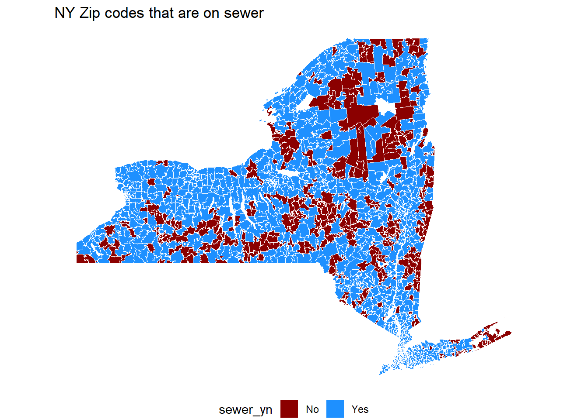

Chapter 5 Adding other spatial data to WBE
5.1 Overview
In this training, you will link zip code boundaries to sewersheds.
5.1.1 Install and Load R packages
Install packages
install.packages("dplyr")
install.packages("ggplot2")
install.packages("sf")
install.packages("tigris")
install.packages("units")Load packages into your current R session.
library(ggplot2)
library(tigris)
library(sf)
library(dplyr)5.1.2 Load data into R
# sewershed boundaries for NYS
ny_sewersheds <- st_read("data/New York State Sewersheds/New York State Sewersheds.shp")
ny_zips <- zctas(state = "New York", year = 2010)5.1.3 Intersect zip code TAs with sewersheds
# Sewershed boundaries - spatial data #
# Sewersheds need to remove upstream
ny_sewersheds <- ny_sewersheds %>% filter(Method == "Influent")
# there are overlapping sewersheds, so the geometry needs to be made valid
ny_sewersheds <- st_make_valid(ny_sewersheds)
# spatial transform the county data
ny_zips <- st_transform(ny_zips, st_crs(ny_sewersheds))
# intersect the datasets
intersection <- st_intersects(ny_zips, ny_sewersheds)
# the result is a list object of each zip code and what row from the sewershed
# object the zip code matches with
# make it a dataframe
intersection <- as.data.frame(intersection)
# the first column are the rows for the zip codes
# the second column are the rows for the sewersheds
# add row ids to each object so we can make a table for each zip code and what
# sewershed it intersects with
ny_sewersheds$sewer_row_id <- seq(1:nrow(ny_sewersheds))
ny_zips$zip_row_id <- seq(1:nrow(ny_zips))
# rename the columns in the intersection object
intersection <- intersection %>%
rename(zip_row_id = row.id,
sewer_row_id = col.id)
# merge the intersection object with the zip code object
ny_zips_merge <- left_join(ny_zips, intersection, by = c("zip_row_id"))
# add the sewershed identifying information
sewer_id_list <- ny_sewersheds %>%
st_drop_geometry() %>%
select(SW_ID, sewer_row_id)
# merge to the zip code object
ny_zips_merge <- left_join(ny_zips_merge, sewer_id_list, by = c("sewer_row_id"))
# add sewer indicator
ny_zips_merge$sewer_yn <- ifelse(is.na(ny_zips_merge$SW_ID), "No", "Yes")
# make a table that could be exported
ny_zip_table <- ny_zips_merge %>%
select(ZCTA5CE10, sewer_yn, SW_ID) %>%
rename(zip_code = ZCTA5CE10) %>%
st_drop_geometry()
# map the zip codes indicating if they intersect with a sewershed or not
ggplot()+
geom_sf(data = ny_zips_merge, aes(fill = sewer_yn), color = "white")+
theme_void()+
theme(legend.position = "bottom")+
labs(title = "NY Zip codes that are on sewer")+
scale_fill_manual(values = c("Yes" = "dodgerblue",
"No" = "darkred"))
head(ny_zip_table)## zip_code sewer_yn SW_ID
## 1 12205 Yes 36001NY0026875ACWWL
## 2 12205 Yes 36001NY0027758ACWWM
## 3 12009 Yes 36001NY0031534ACWWD
## 4 12009 Yes 36001NY0022217ACWWE
## 5 12009 Yes 36001NY0022225ACWWF
## 6 14804 No <NA>